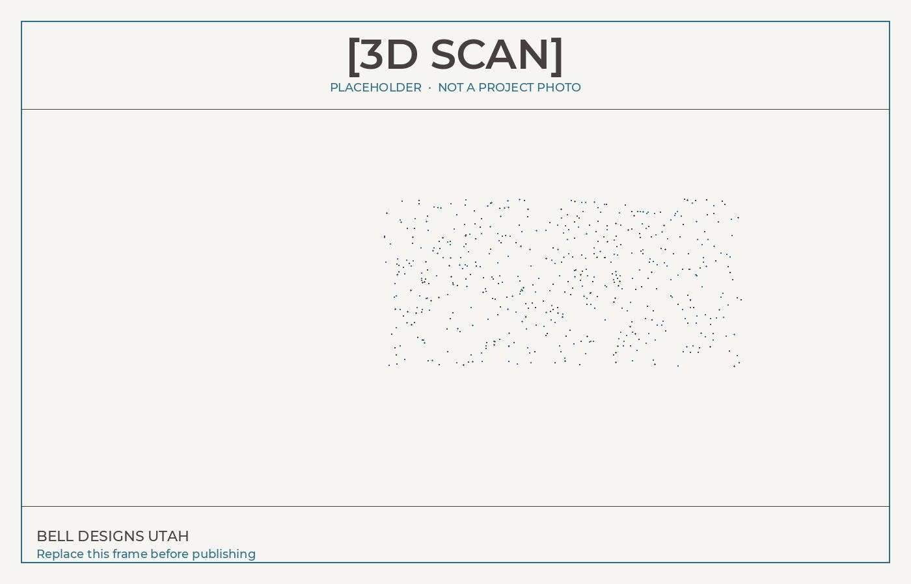

LiDAR and photo scanning for existing houses in Eagle Mountain, Lehi, Utah County, and Salt Lake County. The scan is a measured record of visible surfaces, used for as-builts and later dimensions.
A scan records the existing building as a point cloud and a model. Walls, floors, ceilings, openings, and exposed mechanical, electrical, and plumbing are captured as they stand. That geometry is the starting point for as-builts and new drawings.
The model follows the visible house, so the existing plan is based on what is there rather than an old drawing that no longer matches.
Floor plans, CAD, and later dimensions are taken from that record while the design is underway.
A laser scanner measures distance to visible surfaces and stores those measurements as points.
Overlapping photos can be solved into the same kind of measured model when a photo scan is the method.
The points describe the shape of what the scanner could see. Accuracy depends on the scanner, the distance, and the site.
Floor plans, CAD, and a model are drawn from that geometry so the set matches the house that was scanned.
Dimensions come from the scan of what was visible, instead of a partial tape sketch of the same rooms.
Capturing a room is faster than measuring every wall, opening, and exposed line by hand.
Trades can take dimensions from the model for surfaces the scan already recorded.
New work can be compared with the existing model to look for conflicts. That check does not guarantee every clash was found.
A return visit to re-measure what the scan already captured is not required. Mechanical, electrical, plumbing, and other trades can pull dimensions from the model while they design.
Visible walls, floors, ceilings, openings, and exposed mechanical, electrical, and plumbing.
Pipes, wires, and framing inside closed walls are not in the scan. Those still need a look in person, or a note from someone who opened the wall.
Existing conditions before a bid or a permit set.
Exposed mechanical, electrical, and plumbing they can measure from the model.
A record of the house before a remodel, when the existing layout needs to be known.
The existing plan when original drawings are missing or no longer match the house.
On site, a LiDAR or laser scanner, or a photo set, records the visible rooms.
The points are registered into a model. A photo scan is solved the same way when that is the capture method.
Floor plans, CAD, or a model the team can measure. PDF as-builts when those are part of the job.
[EXAMPLE 3D SCAN - replace with Chris's scan or embed]

Visible surfaces: walls, floors, ceilings, openings, and exposed mechanical, electrical, and plumbing. It does not see through closed walls or into concealed cavities.
Not for what the scan already recorded. Mechanical, electrical, plumbing, and other trades can take those dimensions from the model. Anything hidden behind finishes, or built after the scan, still needs a look in person.
A set of measured points that describe the visible shape of the building. Floor plans, CAD, and a model are drawn from those points.
It depends on the scanner, the distance to the surface, and conditions on site. There is no single tolerance that fits every job. The deliverable is a measured record of what was visible.
The scan is the existing-conditions record. Permit sheets are drafted from it when you ask for a plan set. A scan by itself is not a city submittal.
Tell us the city, the building, and whether you need a point cloud, a floor plan, or an as-built set.
Request a 3D Scan